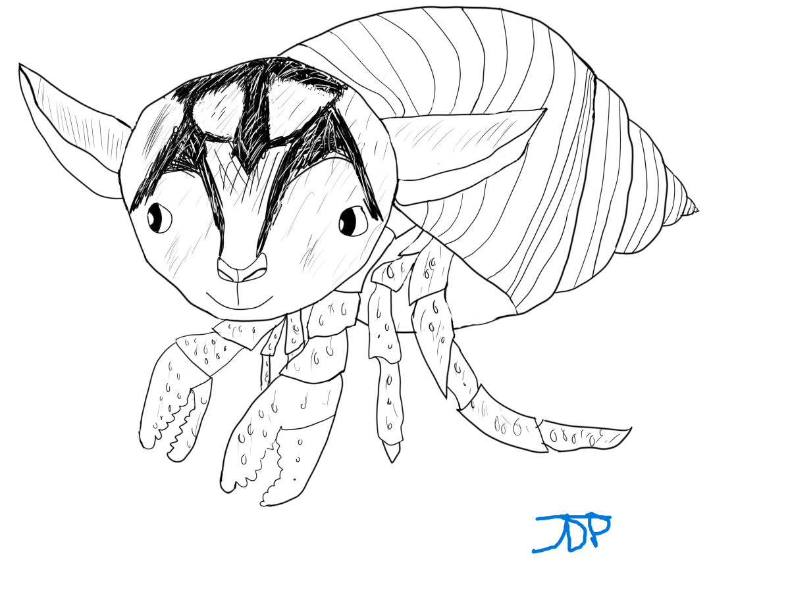
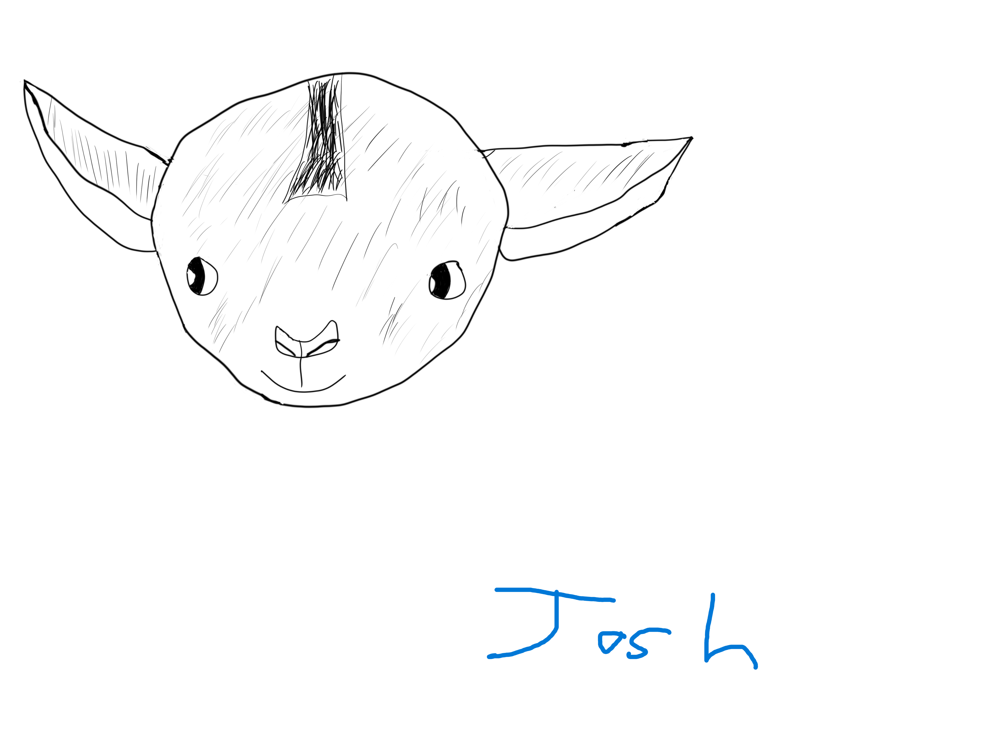

Joshua Pfeil
Here are my major art projects!
Individual Immersive Game Project (Dongk)
Dongk is a 3D mirror maze and my largest game project to date. I put a lot of effort into the 3D modeling and animation for the major assets, so I have covered that here. More info about the game itself can be found on the games page.
Here is my showreel of the 3D assets I made for the game.
Some the of art specific Skills learned:
- Blender 3D modeling, texturing, and animation
- Maya 3D modeling
- Adobe Substance Painter texturing
- Adobe Photoshop 2D art
Animated Logo
I made this fun animated logo for a class and then modified it for my youtube channel. Working on it was my first introduction to using Adobe After Effects, a tool I have used on many occasions since
Some the Skills learned:
- Adobe Photoshop art
- Adobe After Effects animation
The Goat Crab
The Goat Crab is an adorable drawing I made of a baby goat crossed with a hermit crab. I orignally made it for a class assignment and loved the design so much I decided to utilze in my first game project that I was working on at the same time, "Surf or Turf?". This project was my first time using Adobe Photoshop and graphic art in general. Wortking on this I learned a huge amount about layers and the many tools in Photoshop.
Here are the three variants of the original drawing (the Boise State one is by far my favorite):


Here are a few early sketches:
 